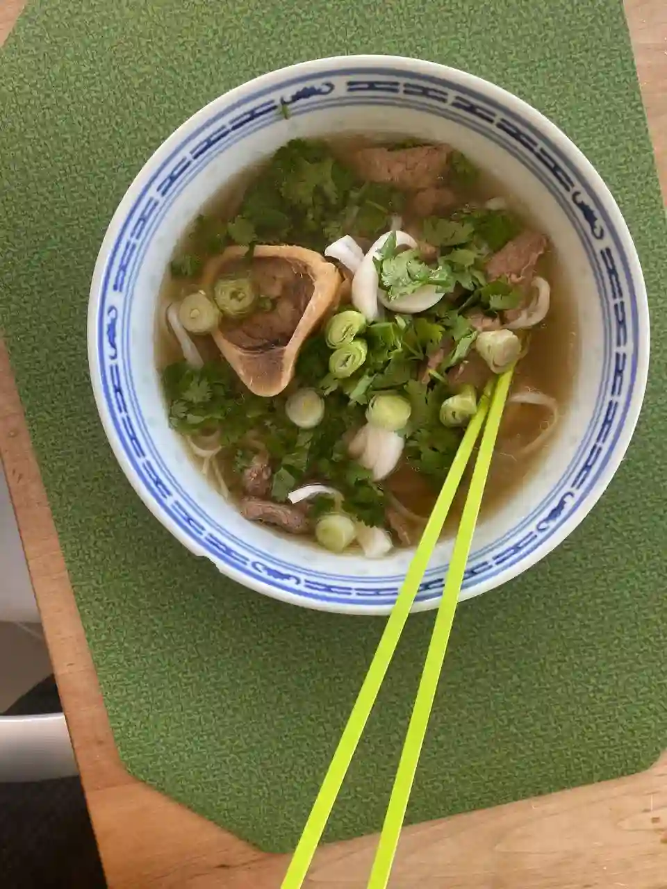

Pho Soup

Vietnamese Pho Soup is a tea-like, beef based soup with a flavor profile that differentiates it from the traditional Western palette. This recipe is designed to be as easy to make as possible, while simultaneously being as based as possible.
- ⏲️ Prep time: 20 min
- 🍳 Cook time: 2 hours
- 🍽️ Servings:4
Ingredients
- Garlic (4-8 large cloves)
- Spring Onions
- Cardamom Seeds (10 or so)
- Star Anise (4-5)
- Ginger
- Cinnamon Sticks (3-5 sticks)
- Diced Beef (300g)
- Beef Bones with marrow (3x)
- Beef bouillon cubes (1-3)
- Coriander (to taste)
- 1 Lime (to taste)
- Fish/Oyster Sauce
- Honey or Brown Sugar
- Rice noodles
Directions
- Heat your oven and place the spices (garlic, cardamom seeds, cinnamon sticks, star anise and ginger) on a tray and bake them until browned or decently toasted.
- Boil bones until you remove most of the scum, and transfer the spices from the oven into the pot. Life will be easier if you can place the spices in a tea strainer of sorts, otherwise, it’s not the worst thing in the world fishing them out later on.
- Add beef bouillon cubes, diced beef, fish/oyster sauce, and honey/sugar, then simmer for a couple hours with the lid on.
- Cook the rice noodles (should only take a few minutes, just until the texture is al dente enough).
- Once the broth is done cooking, fish out the spices that you added at step 2. It’s worth doing this rather than accidentally chewing on a bit of star anise, trust me.
- Cut up coriander and spring onions as garnish.
- Add rice noodles to bowl, followed by the broth and its contents, followed by the garnish. This can be made and eaten within 1 hour if you want it quickly, but typically with broths the longer you simmer the tastier it’ll be.
Contribution
- Jon Burga - website, donate-btc
Recipe tags: vietnamese, beef